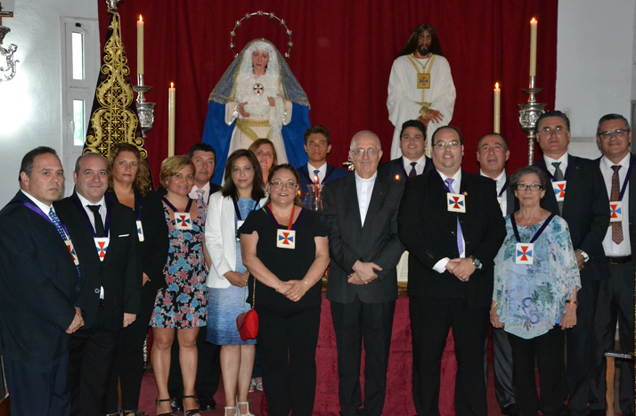
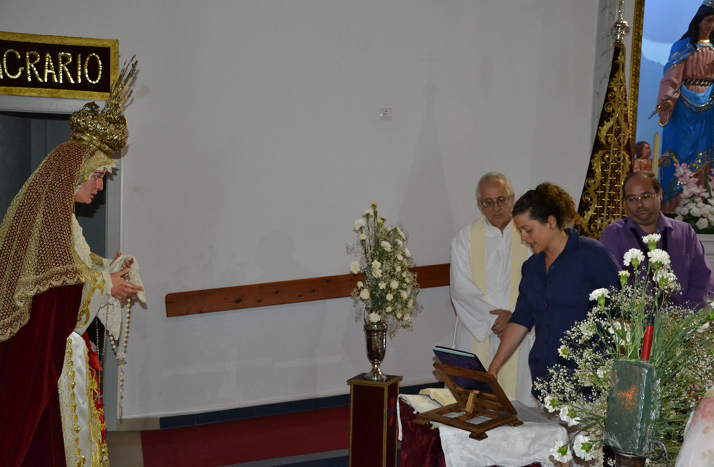

Director Espiritual: Rvdo. P. Luis Sánchez Francisco M.Id.
Hermano Mayor: D. Jesús Saúco Guerra
Vice-Hermana Mayor: Dª. María de los Ángeles Paz Sanz
Fiscal: D. Juan Francisco Ferreira Caro
Secretario: D. Faustino Martín Rey
Mayordomo: Dª Verónica Paz Delgado
Tesorero: D. José Luis García Paradela
Vocal de Formación: D. Manuel Cejudo Llamas
Vocal de Caridad: Dª Manuela de los Milagros Gutierrez López
Vocal de Juventud: D. José Luis Paloma Pérez
Vocal: Dª María Jesús Berenguer Silva
Vocal: Dª Rosa García Olmo
Vocal: Dª María Teresa Pérez Fernández
Vocal: D. José Manuel Talavera Benitez
Vocal: D. Rafael Jesús Suárez Collantes
Vocal: Dª Marta Sánchez Sánchez